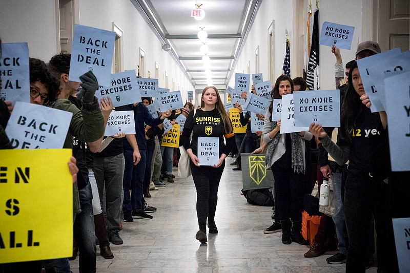
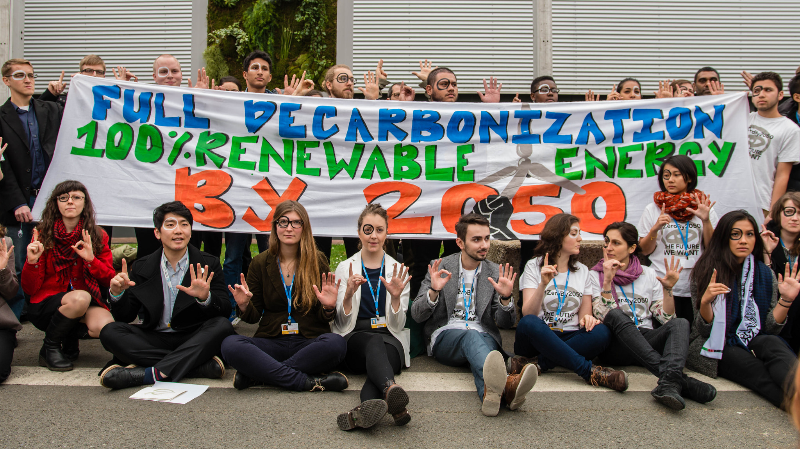
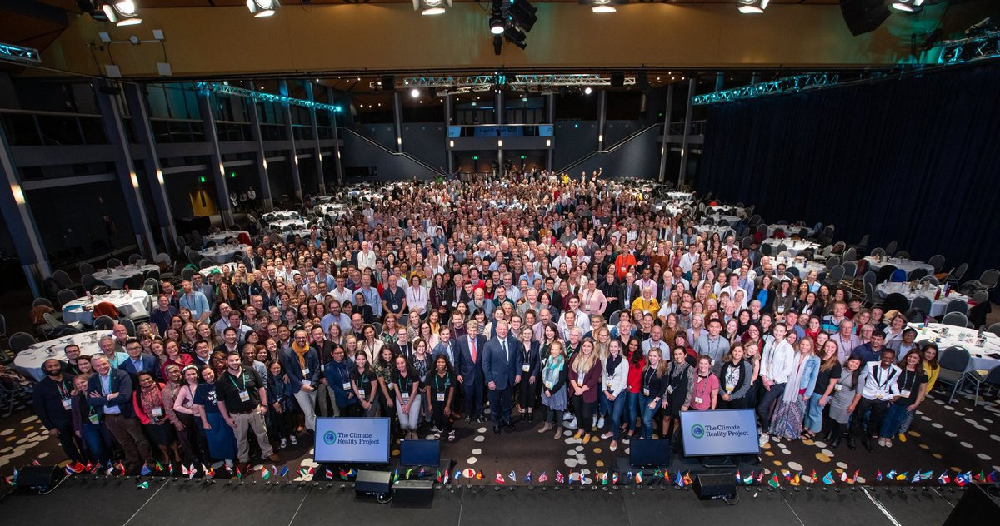
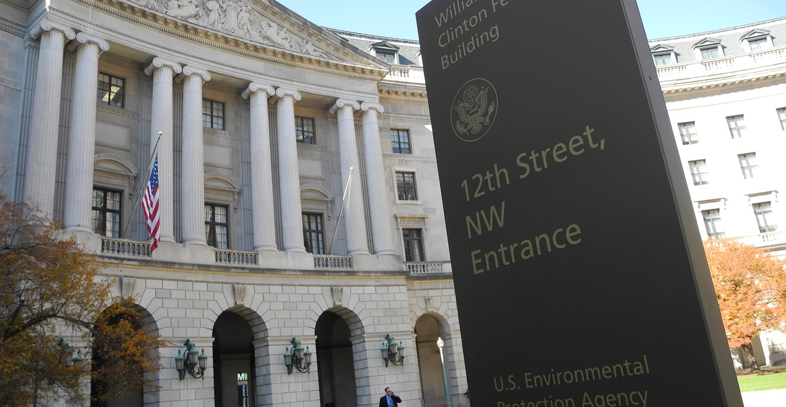
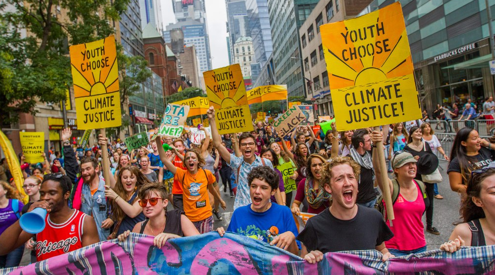

Organizations for Sustainability

The Sunrise Movement is a non-profit organization devoted to help fight the climate change crisis founded in Washington D.C. They have initiated numerous amounts of activities for young people to be involved in such as the November Sit In, Green New Deal Committee, and currently Climate Debate Sit-In in D.C. They have been successful in implementing a climate change debate talk within candidates and extending their hubs nationwide. If you are looking for environmental activism, this might be the organization for you. Initially founded in April 2017. Sunrise is a movement to stop climate change and create millions of good jobs in the process.
"We are not looking to the right or left. We look forward. Together, we will change this country and this world, sure as the sun rises each morning."
https://www.sunrisemovement.org/
"WE'RE BUILDING AN ARMY OF YOUNG PEOPLE TO MAKE CLIMATE CHANGE AN URGENT PRIORITY ACROSS AMERICA."

The SustainUS : Youth for Justice and Sustainability is a nonprofit organzation devoted to help American
youth get involved in the reduction of the carbon footprint as well as take leadership in creating change.
They have had multiple protests in certain chapters and youth are beginning to take charge in their communities
to hitherto the detrimental effects of air pollution and greenhouse emmissions. If you are looking for leadership
to take charge in your community, this organization would be beneficial to you and your community. SustainUS has
trained more than 900 youth to tell their stories, shape culture, build power, and pass their training on to others.
SustainUS members have received 7 Brower Youth Awards through their commitment to climate justice. Over 600 media
hits including articles, press releases, and interviews about SustainUS work have been published in the past 5 years.
https://sustainus.org/
"WE TRAIN YOUTH TO LEAD"

The Climate Change Reality Project is a nonprofit organization that helps train youth and peers alike to come together
for the better of the environment. Alike SustainUS, The Climate Change Reality Project mission is to help college and high school
students to take leadership in their communities and have training in order to prepare to take lead for change in their communities.
Burning fossil fuels like coal and oil is causing a climate crisis that’s sending temperatures skyrocketing, killing our crops, and
causing seas to rise. This is a huge problem. One that has many parents asking: “How can I prepare my kids for the future in a warming world?”
The answer is to advocate for comprehensive, standards-based climate science education in school curriculums everywhere. In this free resource, discover:
Why denying kids the truth about a crisis they will experience is morally wrong. How kids can learn a lot by taking on climate change.
The importance of properly preparing young people for the future of work.
URL: https://www.climaterealityproject.org/
"EVERY SINGLE PERSON ON THIS EARTH HAS THE POWER TO CHANGE THE WORLD."

The United States Environmental Protection Agency is a governmental protection agency located offices everywhere in the United States.
This website might be helpful in knowing more about the conditions around your local community as well as in your county. EPA researchers
provide the scientific foundation that supports our mission to protect human health and the environment. Attorneys at EPA work on cutting-edge
legal issues. Learn more about our legal offices and law career opportunities, and about opportunities for law school grads.
Want to help protect your environment? Improve the health of all Americans? From geology to mechanical engineering, from biology to chemistry,
EPA is looking for scientists, technologists and engineers to perform cutting-edge research in a dynamic learning environment -- research that
can help make this a cleaner, more sustainable planet.
URL: https://www.epa.gov/
"MAKING A DIFFERENCE STARTS WITH YOU."

The Sierra Student Coalition is a network of high school students and college students alike coming together to solve the climate change
crisis as well as initiating new community service projects nationwide. In addition, The Sierra Club hosts a Climate Justice League, a 10
week summer immersion program in which high school students are prepared for the leadership positions. The Sierra Club is the most enduring
and influential grassroots environmental organization in the United States. We amplify the power of our 3.5+ million members and supporters
to defend everyone’s right to a healthy world. Sierra Club volunteers lead over 15,000 trips annually, from extended trips across the world
to afternoon hikes not far from home. Today, years of hard-fought environmental protections are under threat—and to influence governments
and businesses, we need everyone to speak up and shout out. Explore how you can get involved.
URL: https://www.sierraclub.org/youth
"WE NEED YOUR VOICE."